Impulse Fluid Simulation
本文提出了一种新的基于冲量测量变换的incompressible NS solver。该方法的数学模型来自于NS方程的冲量-速度公式，将流体冲量当作辅助变量，在每个时步的最后可以将其投影得到incompressible的速度。该方法在笛卡尔网格上数值求解冲量形式的方程。模拟算法的核心是1. 解决了impulse stretching，2.使用harmonic boundary treatment，增加了表面张力的效果。本文还构建了一个PIC/FLIP solver，支持自由表面的流体模拟。
Gauge method
Gauge method求辅助变量 $m$ 的解，而不是直接求流体速度 $u$。$u$可以通过投影得到：$u=m-\nabla p$（Helmholtz-Hodge分解），其中 $p$ 是一个标量。投影步骤的输入是一个gauge variable，输出是无散的速度。而传统方法的投影步骤输入输出都是速度场。这一步表明，gauge variable和流体速度是比较松散地耦合的。
优点：
- 松弛的耦合关系使得我们可以设计能更好地保持流体视觉效果的gauge variable
- gauge形式和原来的NS方程很相似，我们可以使用现有的高性能模拟方法
难点：
- 大多数gauge形式不是拉格朗日的，无法方便地获得 $Dm/Dt$，不能直接利用成熟的拉格朗日数值工具（比如半拉格朗日法，PIC/FLIP等）
- 虽然高阶精确，gauge method的数值实现过于复杂，特别是边界处理
- 我们不清楚gauge的数学形式和它用于流体模拟效果的潜力之间的关系
本文贡献
- 第一个支持涡流的欧拉基于冲量的gauge method
- 设计了一个新的数值方法，可以解决拉伸问题
- 用harmonic treatment将冲量方法扩展到欧拉-拉格朗日框架，从而模拟有表面张力的自由表面流
物理模型
不可压缩的NS方程
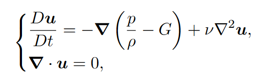
- 在自由表面上，流体用来平衡表面张力的法线压力为 $p=\gamma \kappa$，其中 $\gamma$ 是表面张力系数，$\kappa$ 是自由表面的平均曲率。这里不考虑自由表面的粘性压力。
- 在固体边界上，流体满足非穿透边界条件（non-penetrating boundary conditions），即流体的法线速度和固体的法线速度相等：$n \dot u = n \dot u_b$，其中 $u_b$ 是边界墙的速度，$n$是表面法线。这里不考虑非滑动条件。
Gauge transformation
首先将无散的速度场 $u$ 转换成冲量表达式：$m=u+\nabla \phi$，其中 $\phi$ 满足

$\alpha_n=n \dot \nabla$是法线梯度。这个方程组可以被看作常规的投影步骤，即求解受标准自由表面（第二行）和固体边界条件（第三行）约束的泊松方程（第一行），输入冲量场 $m$，输出速度场 $u$。将这些代回NS方程，得到NS方程的冲量形式:
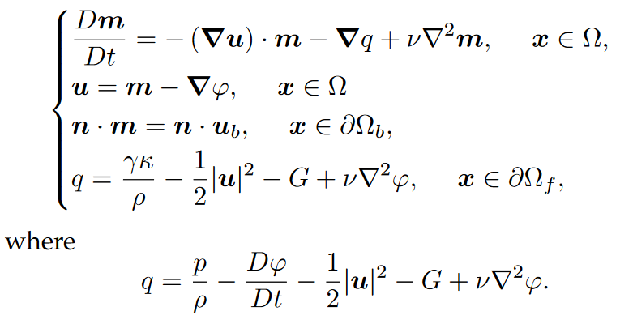
和标准NS方程一样，这个方程组包含一个动量守恒方程（第一行），不可压缩条件（第二行），固体边界条件（第三行）和自由表面条件（第四行）。自由表明条件由一个gauge variable $q$ 来满足。通过逐渐演变 $m$，最后从 $m$ 得到 $u$。这样的好处是，不需要 $m$ 在演化过程中满足全局的不可压缩条件，可以设计更灵活的时域演化策略。
不可压的冲量流
要解的冲量流体方程：
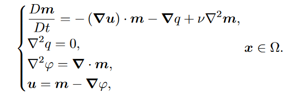
固体边界条件：
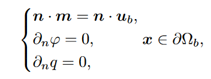
自由表面边界条件：
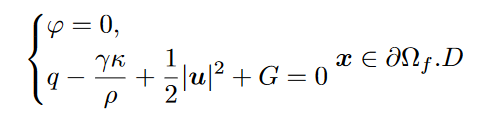
浮力
用Boussinesq近似模拟烟粒密度的变化。忽略除了密度之外其他流体属性的变化，并且密度只出现在和重力加速度常数相乘。浮力可以直接应用于 $m$：
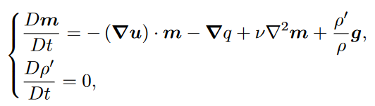
其中 $p’$ 是有效烟密度，$\rho$ 是背景密度常数。
数值方法
本文的求解器使用标准MAC网格进行空间离散化，$u$ 和 $m$ 储存在网格面的中心，gauge variable $\phi$, $q$, 烟粒密度 $\rho ‘$ 或levelset value $\Phi$ 存储在元胞中心。levelset function用来追踪液体表面。
模拟的每一个时间步包括reinitialization, advection, stretching, viscosity, projection。
Reinitialization
每个时步的最开始，将冲量 $m^n$ 和一个很小比例的速度 $u^n$ 混合：$m^n_r=rm^n+(1-r)u^n$，其中 $r$ 是一个接近1的全局参数。这么做的动机是防止冲量经过一段时间变得太大，导致数值不稳定。reinitialization只会影响到非无散的部分，投影得到的速度场是一样的。
Advection
只考虑advection时，$Dm/Dt=0$，可以离散化成
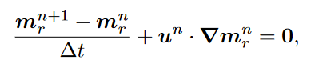
即 $m_r^{n+1}=m_r^n-\delta t u^n \dot \nabla m_r^n$。可以用半拉格朗日法（对于烟的模拟），或者PIC/FLIP方法（对于液体模拟）。
Fluid Simulation on Neural Flow Maps
本文提出了一种混合神经场表示，Spatially Sparse Neural Fields (SSNF)，将小神经网络和重叠的、多分辨率的、稀疏的网格金字塔结合起来，紧凑地表示长期时空速度场。有了neural velocity buffer，就可以计算长时间跨度、双向的flow maps以及它们的Jacobians。
Flow Map
在流体域 $\Omega$ 定义一个时空速度场 $u(q, \tau)$，表示 $\tau$ 时刻在位置 $q$ 处的速度向量。对于某个物质点 $X\in \Omega$，正向的flow map定义为：
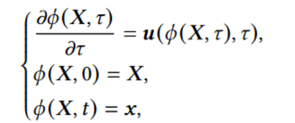
$X$ 表示0时刻点的位置，$x$ 表示 $t$ 时刻点的位置。类似地，定义反向flow map：
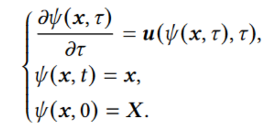
空间梯度（Jacobian）表示如下，它们表示初始和当前帧的变形：
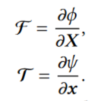
时域上的：
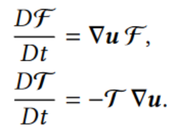
粘性液体的欧拉方程的冲量形式：
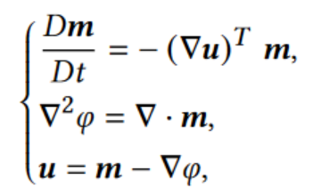
solver首先计算反向的flow map $\psi$ 和它的Jacobian $\mathscr{T}$，然后通过 $m(x,t)=\mathscr{T} ^T m (\psi (x),0)$ 重建冲量 $m$。类似地，计算正向flow map $\phi$ 和它的Jacobian $\mathscr{F}$，$\bar{m}(X,0)=\mathscr{F}^Tm(\phi(X),t)$。然后将 $\bar{m}(X,0)$ 和 $\bar{m}(X,0)$ 比较，计算BFECC误差。
问题：逆向映射用半拉格朗日法演算，每一步有耗散的网格插值；而正向映射是用高阶Runge-Kutta方法进行的，是精确的。这两者的不对称导致了数值误差。
Alternative: Bidirectional March
正向和反向的flow map都描述了速度场在时域上的积分，所以都可以用一样的不需要插值的Runge-Kutta方法计算。
bidirectionla marching的难点：存储时空域上的速度的buffer需要多少内存？
- 本文提出的解决方法：使用memory-compact Implicit Neural Representations，即SSNF
- Spatially Sparse Neural Fields相比在密集的均匀网格上存储一个速度场，可以用较少的内存表示长距离的时空速度信息
Spatially Sparse Neural Fields (SSNF)
SSNF是一个通用目的的表示时空信号的混合INR。它包含：
- 多分辨率的空间上稀疏的数据结构，保存可训练的特征向量
- 一系列轻量的神经网络，将特征向量解码成MAC网格上的离散的速度场
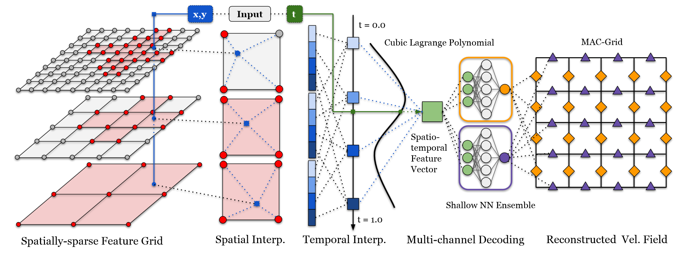
输入坐标 $(x,y,t)$，先用空间坐标 $(x,y)$ 查询特征网格，在每个分辨率的层级上得到一个特征向量。每个特征向量被分成四个片段，对应4个时间戳，跨分辨率的片段被拼接起来，形成4个时间锚向量，可以用来插值得到 $t$ 时刻的特征向量。最后，用神经网络解码得到各个方向上的速度分量。
Solid-Fluid Interaction on Particle Flow Map
Particle Flow Map: 准确的长距离不可压缩流体模拟。前向模拟中的粒子轨迹本身就是一个flow map。
本文提出的欧拉-拉格朗日框架包含以下四部分：
- 拉格朗日粒子
- 两尺度的map，存储各种流动的量的映射
- 粒子到网格的插值方法，用来从粒子到网格节点传输某些量
- 混合的基于冲量的求解器，保证不可压缩性
优点：
- 复杂的涡结构和湍流的细节
- 相比neural flow map减少计算时间（49倍），减少内存消耗（41%）